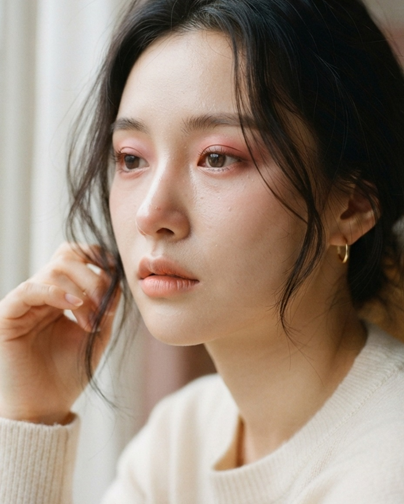
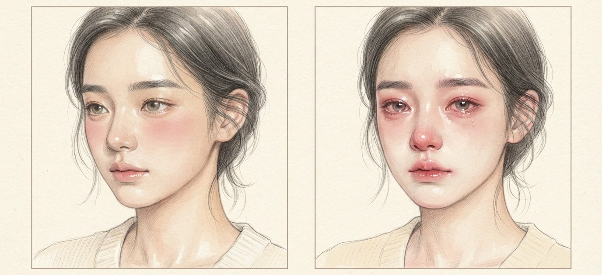
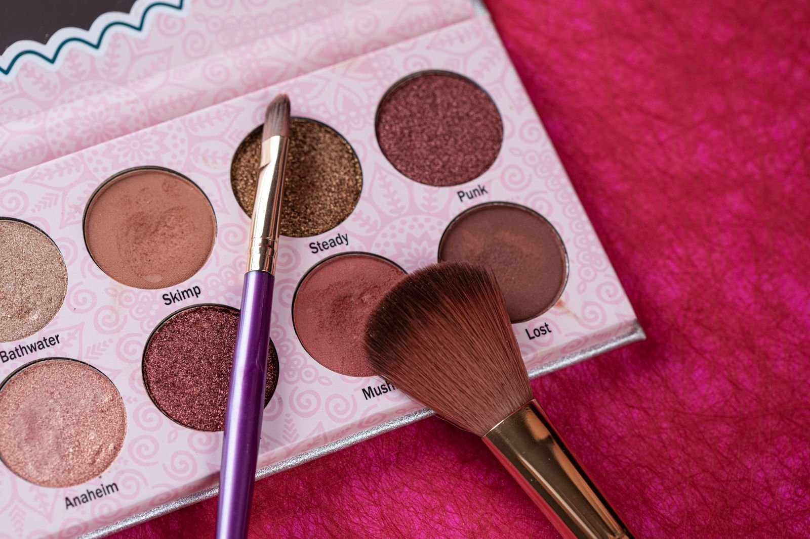
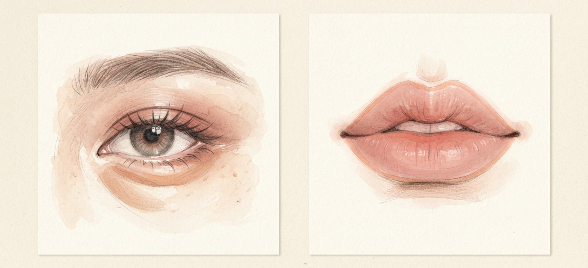

눈 밑만 물들이던 낮술 메이크업 다음 유행은 울고 난 것처럼 눈과 코 주변이 붉은 울먹 메이크업이에요.

눈두덩엔 베이지·브라운 섀도로 차분하게 베이스를 깔아요.
언더(눈 밑)는 핑크 톤으로 은은하게 잡아요.
장미빛 섀도를 코끝·입가·눈썹·눈두덩에 브러시로 가볍게 쓸어줘요.

보송한 벨벳 제형의 살구빛 펜슬을 하나 준비해요.
애굣살 바로 밑에 살짝 그어 그림자처럼 음영을 줘요.
입술 산을 또렷하게 그리지 말고 허물듯 둥글게 오버립을 그려요.
더 아련하게 하고 싶다면 붉은 립 라이너로 눈 밑 점막을
살짝 채워 보세요. 울고 난 듯 충혈된 느낌이 나요.
저장해두고 쇼핑할 때 꺼내보세요